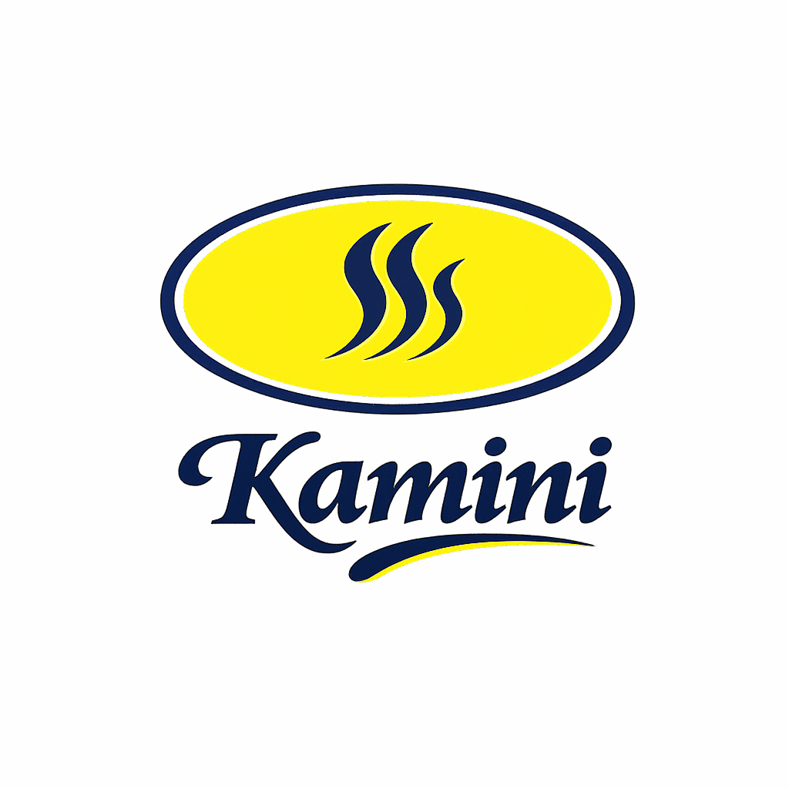
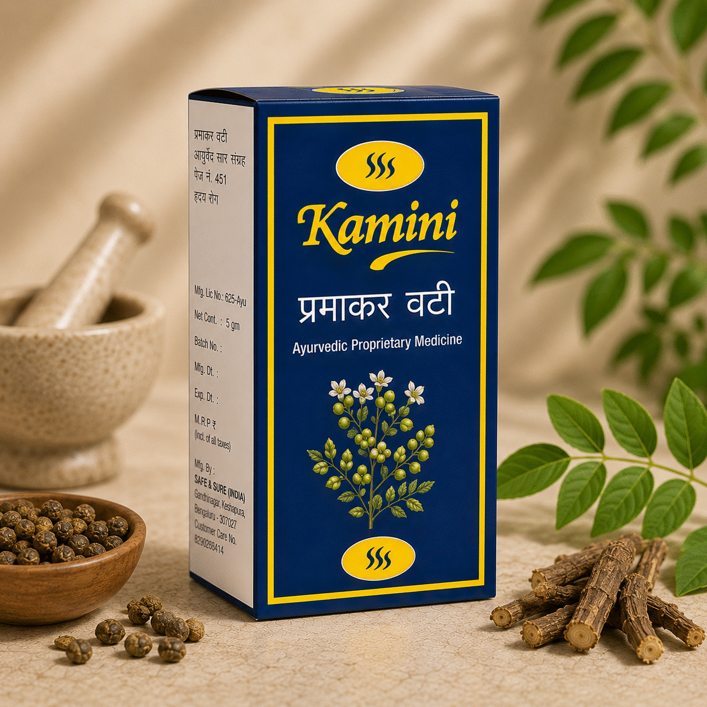

Safe & Sure (India).
A family-run Ayurvedic medicine manufacturer based in Bengaluru. Maker of the Kamini line of classical proprietary formulations.

A modest workshop.
An honest medicine.
Safe & Sure (India) was founded by Ayurvedic practitioners who were tired of seeing classical formulations diluted, re-packaged and marketed without the original ingredients. Our small Bengaluru workshop produces the Kamini line the way it has always been made — right ratios, right bhasmas, right pak (cooking time).
We make eleven formulations. We will never make more than we can hand-check.
Four steps.
No shortcuts.
Source
Each herb is sourced from a single trusted partner farm. We hand-grade before processing — under-ripe or insect-damaged lots are returned.
Shodhan
Minerals and bhasmas undergo classical shodhan (purification) before they ever touch a formulation. Days, not hours.
Marda
Each formulation is hand-ground (marda) until it passes the classical fineness test. Machines only assist; never replace.
QC
Every batch is tested for identity, microbial count and heavy metals before it leaves Bengaluru. Reports are archived for ten years.
The work, measured.
Every pack of Kamini carries the same level of care. Here's what that looks like in numbers.

Three things we
will never do.
Substitute
We will not substitute a herb because it's cheaper or easier to procure. The classical formula stands.
Embellish
We will not add synthetic actives, fragrance or colour to our medicine. The pack is plain. The medicine is honest.
Rush
We will not ship a batch that hasn't completed its full classical pak (cooking) and QC cycle — even if it means a delayed delivery.
Distributorship
or bulk enquiries?
We work with select Ayurvedic clinics, pharmacies and modern wellness retailers across India. Reach out if your practice would suit Kamini.